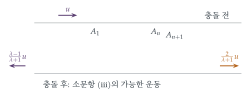

STEP II 1990, 문제 14
계속 읽기 전에 문제를 먼저 읽어 보자. 문제는 STEP Support Programme의 문제 데이터베이스에 있다: step.maths.org/questions/90-s2-q14
도입
뉴턴의 요람(Newton’s cradle)에서 공 하나를 당겼다 놓으면 반대쪽 끝에서 공 하나가 튀어 나간다. 두 개를 당겼다 놓으면 두 개가 튀어 나간다. 왜 그럴까? 왜 공 하나가 두 배의 속력으로 튀어 나가거나, 공 세 개가 3분의 2의 속력으로 튀어 나가지는 않을까? 두 경우 모두 운동량(momentum)은 올바르게 전달하는데 말이다.
답은 역학의 두 가지 큰 보존 법칙(conservation laws)에서 출발한다. 운동량과 에너지를 함께 쓰면 어느 한쪽만 쓸 때보다 훨씬 강한 제약이 생기고, 상상할 수 있는 결과 대부분이 배제된다. 이 문제는 보존 법칙을 제약 조건으로 사용한다. 무슨 일이 일어나는지 계산하는 것이 아니라, 무슨 일이 일어날 수 있는지 판단하는 것이다. 보존 법칙을 가능한 모든 결과가 따라야 하는 규칙으로 보는 이러한 사고방식은 물리학 전체에 걸쳐 나타난다.
시작하기 전에
질량이 \(m\)이고 속력 \(u\)로 움직이는 구슬이 정지해 있는 질량 \(M\)의 구슬에 부딪히고, 운동 에너지(kinetic energy)가 보존된다. 충돌 후의 속도는 각각 얼마인가? \(M = m\)이면 어떻게 되는가?
충돌 후의 속도를 \(p\)와 \(q\)라 하자. 운동량 보존에서 \(mp + Mq = mu\)이고, 에너지 보존에서 \(mp^2 + Mq^2 = mu^2\)이다. 이 두 식을 \(m(u - p) = Mq\)와 \(m(u - p)(u + p) = Mq^2\)으로 쓰고 나누면 \(u + p = q\)를 얻는다. 따라서 \[p = \frac{m - M}{m + M}\,u, \qquad q = \frac{2m}{m + M}\,u.\] \(M = m\)이면 첫 번째 구슬은 멈추고 두 번째 구슬이 속력 \(u\)로 움직인다. 즉 두 구슬은 속도를 그대로 맞바꾼다. 질량이 같은 구슬들이 줄을 따라 운동을 전달하는 것은 이 때문이다.
차근차근 풀기
단계 1 마지막 두 구슬만 움직이는 경우
충돌 후 \(A_n\)(속도 \(p\))과 \(A_{n+1}\)(속도 \(q\))만 움직인다고 하자. 보존 법칙을 식으로 써 보라. 어느 구슬의 운동이 \(p\)의 부호를 제약하는가?
운동량 보존과 에너지 보존에서 \[mp + \lambda mq = mu, \qquad \tfrac12mp^2 + \tfrac12\lambda mq^2 = \tfrac12mu^2.\] 이는 질량 \(m\)인 구슬이 질량 \(\lambda m\)인 구슬에 부딪힐 때의 방정식과 같으므로, (\(A_n\)이 \(A_{n+1}\)을 통과해야 하는 해 \(p = u\), \(q = 0\)을 제외하면) \[p = \frac{1 - \lambda}{1 + \lambda}\,u, \qquad q = \frac{2}{1 + \lambda}\,u.\] \(\lambda < 1\)이면 두 값이 모두 양수이고 \(p < q\)이다. \(A_n\)은 \(A_{n+1}\)을 따라가지만 더 느리므로 둘은 멀어지고, 모든 것이 모순 없이 들어맞는다. \(\lambda > 1\)이면 \(p < 0\)이므로 \(A_n\)은 뒤로 움직인다. 그런데 \(A_{n-1}\)이 바로 뒤에 맞닿은 채 정지해 있고, \(A_n\)은 그것을 통과할 수 없다. 따라서 이러한 운동은 불가능하다.■
단계 2 세 구슬이 움직이는 경우
이번에는 \(A_{n-1}\), \(A_n\), \(A_{n+1}\)만 각각 속도 \(a\), \(b\), \(c\)로 움직인다고 하자. 어느 구슬이 정지해 있고 어느 구슬이 어느 구슬 뒤에 있는지를 고려하면, \(a\), \(b\), \(c\)는 어떤 부등식을 만족해야 하는가?
구슬 \(A_{n-2}\)가 \(A_{n-1}\) 뒤에 정지해 있으므로(\(n \geq 3\)이므로 이 구슬은 존재한다) \(a \geq 0\)이다. 또 어떤 구슬도 앞의 구슬을 추월할 수 없으므로 \(a \leq b \leq c\)이다. 이를 합치면 \(0 \leq a \leq b \leq c\)이다. 보존 법칙은 \[a + b + \lambda c = u, \qquad a^2 + b^2 + \lambda c^2 = u^2.\]
운동량 방정식을 제곱하여 에너지 방정식과 비교해 보라. 무엇이 남는가?
제곱하면 \(u^2 = a^2 + b^2 + \lambda^2c^2 + 2ab + 2\lambda ac + 2\lambda bc\)이다. 여기서 에너지 방정식을 빼면 \[0 = \lambda(\lambda - 1)c^2 + 2ab + 2\lambda c(a + b).\] \(\lambda > 1\)이고 \(a, b, c \geq 0\)이므로 우변의 모든 항은 음이 아니고, 따라서 모든 항이 0이다. 특히 \(c = 0\)이고, 그러면 \(0 \leq a \leq b \leq c\)에 의해 \(a = b = 0\)이다. 그런데 그러면 전체 운동량이 \(mu\)가 아니라 \(0\)이 된다. 모순이므로 이러한 운동은 불가능하다.■
논증의 구조에 주목하라. 운동량 방정식을 제곱하면 \(2ab\)와 같은 교차항이 생기지만, 에너지 방정식에는 그런 항이 없다. 그 차이는 운동이 얼마나 “퍼져 있는지”를 나타낸다. \(\lambda > 1\)일 때, 같은 논증으로 \(A_k, \ldots, A_{n+1}\)만 음이 아닌 속도로 움직이는 어떠한 결과도 배제된다는 것을 알 수 있겠는가?
단계 3 움직일 수 있는 두 구슬
앞으로 움직이는 구슬들이 모두 맨 끝에 있어야 하는데 그것이 불가능하다면, 어떤 구슬은 뒤로 움직일지도 모른다. 어느 구슬이 뒤로 움직일 수 있는가?
뒤에 아무것도 없는 구슬은 \(A_0\)뿐이다. \(A_0\)이 속도 \(p\)(음수일 수도 있다)로, \(A_{n+1}\)이 속도 \(q\)로 움직이고 나머지는 모두 정지해 있다고 해 보자. 보존 법칙은 다시 질량 \(m\)과 \(\lambda m\)의 충돌에 대한 식과 같으므로 \[p = -\frac{\lambda - 1}{\lambda + 1}\,u, \qquad q = \frac{2}{\lambda + 1}\,u.\] \(A_0\)은 튕겨 나오고 \(A_{n+1}\)은 앞으로 움직이며 그 사이의 구슬들은 정지한 채로 남는데, 이 모두가 모순 없이 들어맞는다. 마치 \(A_0\)이 \(A_{n+1}\)에 직접 부딪힌 것과 똑같으며, 그 사이에 늘어선 같은 질량의 구슬들은 완벽한 전달자 역할을 한다.■

돌아보기
제약 조건으로서의 보존 법칙. 우리는 충돌 과정을 하나하나 따라가지 않았다. 운동량, 에너지, 기하학적 조건이 어떤 결과를 허용하는지를 물었을 뿐이다.
물리적 부등식이 중요하다. “구슬은 서로를 통과할 수 없다”는 사실에서 부등식 \(0 \leq a \leq b \leq c\)를 얻었고, 소문항 (i)과 (ii)의 경우를 배제한 것은 보존 법칙이 아니라 바로 이 부등식이었다.
제곱하고 빼기. 운동량의 제곱을 에너지와 비교하면 0이 되어야 하는 교차항들의 합이 나온다.
숨은 수학
왜 공 하나가 튀어 나오는가
같은 공들로 이루어진 뉴턴의 요람에서 공 \(k\)개가 함께 속력 \(w\)로 떠난다고 하자. 운동량 보존에서 \(kw = u\)이고 에너지 보존에서 \(kw^2 = u^2\)이다. 나누면 \(w = u\)이고 \(k = 1\)이다. 따라서 떠나는 공들이 함께 움직이는 결과 중에서 두 법칙을 모두 만족하는 것은 “공 하나가 처음 속력으로 떠나는 것”뿐이다. 공 두 개가 절반의 속력으로 떠나면 운동량은 맞지만 에너지는 절반뿐이고, 공 하나가 두 배의 속력으로 떠나면서 운동량이 맞으려면 그 공이 반쪽짜리 공이어야 한다.
그러나 이것으로 문제가 해결되지는 않는다. 공이 \(n\)개이면 미지의 속도는 \(n\)개인데 보존 법칙은 두 개뿐이므로, 두 법칙을 모두 만족하는 결과는 무수히 많다(세 공이 서로 다른 속력으로 움직이는 결과를 하나 찾아보라). 실제로 어떤 결과가 일어나는지는 접촉하는 동안 공이 어떻게 변형되는지에 달려 있다. 1980년대 초 Frank Herrmann과 동료들은 우리에게 익숙한 현상이 충격이 퍼지지 않고 줄을 따라 전달되는 데 달려 있으며, 이는 단단한 강철 공들 사이에 아주 작은 틈이 있을 때 일어난다는 것을 보였다. 공이 무르거나 공들이 서로 꽉 눌려 있으면 요람은 덜 깔끔하게 움직이며, 정밀하게 측정해 보면 다른 공들도 늘 조금씩 움직인다.
보존 법칙과 대칭
보존 법칙은 어디에서 오는가? 1918년 에미 뇌터(Emmy Noether)는 현대 물리학의 토대 중 하나가 된 정리를 증명했다. 물리계의 모든 연속적인 대칭(symmetry)에는 보존되는 양이 하나씩 대응한다는 것이다. 물리 법칙이 여기에서나 1미터 왼쪽에서나 같다면(공간 평행이동에 대한 대칭) 운동량이 보존된다. 오늘이나 내일이나 같다면(시간 평행이동에 대한 대칭) 에너지가 보존된다. 모든 방향에서 같다면(회전 대칭) 각운동량(angular momentum)이 보존된다. 뇌터 정리는 대학 2학년의 라그랑주 역학(Lagrangian mechanics) 과목에서 배우게 되며, 이 장에서는 그 결과를 곳곳에서 사용한다.
1668년 왕립학회(Royal Society)는 물체의 충돌 문제에 대한 해답을 공모했다. 존 월리스(John Wallis)는 비탄성 충돌(inelastic collision)을 다루었고, 크리스토퍼 렌(Christopher Wren)과 크리스티안 하위헌스(Christiaan Huygens)는 각자 독립적으로 탄성 충돌의 경우를 풀었다. 하위헌스의 핵심 통찰은 기준틀을 바꾸는 것이었다. 질량 중심(centre of mass)과 함께 움직이는 배 위에서 충돌을 바라보면, 같은 두 공은 속력이 그대로 반대 방향으로 바뀌어 튕겨 나갈 뿐이다. 그런 다음 다시 강가의 기준틀로 변환하면 된다. 그는 또한 어떤 양, 곧 질량과 속력의 제곱을 곱한 것의 합이 충돌 전후에 같다는 것도 알아차렸다. 다만 운동 에너지가 그 자체로 보존되는 양으로 인정받기까지는 그 후로 한 세기가 더 걸렸다.
사고 기술
과정이 너무 복잡해서 따라갈 수 없을 때는, 변할 수 없는 양들을 나열하고 그 양들이 어떤 결과를 허용하는지 살펴보라.
물리학자들은 입자 가속기 속 충돌을 바로 이렇게 추론한다. 세부적인 상호작용은 알 수 없지만 운동량, 에너지, 전하는 균형을 이루어야 한다. 여기에 부등식(이 문제에서는 구슬이 서로를 통과할 수 없다는 사실)을 결합하면 어떤 결과가 불가능하다는 것을 증명할 수 있다.
더 도전하기
같은 문제 다시 보기. STEP I 2006, 문제 11을 풀어 보라. 홈통 안에 입자들이 한 줄로 놓여 있고 끝에 더 무거운 입자가 있다. 가능한 최종 상태는 무엇인가?
충돌을 따라가기. 소문항 (iii)의 충돌을 \(A_0\)이 \(A_1\)에 부딪히는 것으로 시작하는, 두 구슬 사이의 개별 충돌이 차례로 일어나는 과정으로 모형화하라. 이 과정을 끝까지 따라가서 소문항 (iii)에서 구한 운동으로 끝난다는 것을 보여라.
두 공을 보내기. 같은 공 다섯 개로 이루어진 요람에서 공 두 개를 함께 놓아 나머지 세 공에 속력 \(u\)로 부딪히게 한다. “공 두 개가 속력 \(u\)로 떠난다”는 결과가 두 보존 법칙을 모두 만족함을 보이고, 두 법칙을 만족하는 다른 결과를 하나 찾아라.
가벼운 끝. \(\lambda < 1\)일 때 두 구슬 사이의 충돌이 차례로 일어나는 과정을 따라가 보라. \(A_n\)과 \(A_{n+1}\) 이외의 구슬 중에 결국 움직이게 되는 것이 있는가?
더 읽을거리
David Morin, Introduction to Classical Mechanics (Cambridge University Press), 5장. 운동량 보존과 에너지 보존을 다루며, 충돌에 관한 문제가 많이 실려 있다.
Frank Herrmann & Peter Schmälzle, “Simple explanation of a well-known collision experiment”, American Journal of Physics 49 (1981). 뉴턴의 요람이 왜 그렇게 작동하는지 설명한다.
Dwight Neuenschwander, Emmy Noether’s Wonderful Theorem (Johns Hopkins University Press). 대칭과 보존 법칙 사이의 관계를 알기 쉽게 설명한다.